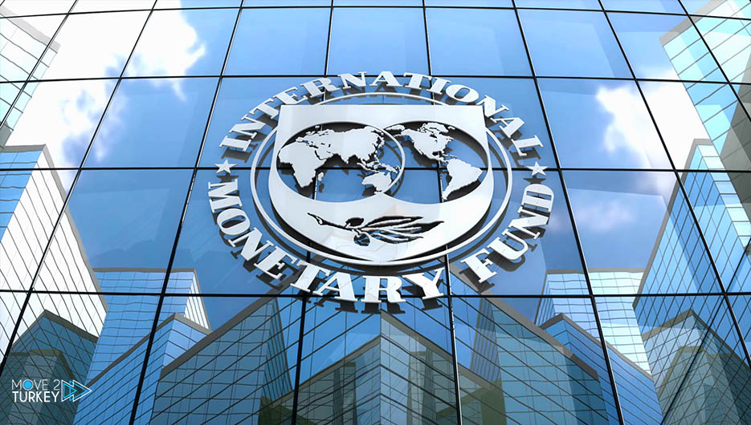
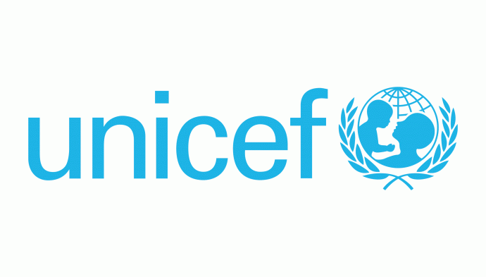

Kerjasama Multilateral
Pengertian
Kerja sama yang dilakukan oleh dua negara atau lebih dengan lembaga internasional dan tidak terbatas wilayah.
Faktor-Faktor
Manfaat-Manfaat
Manfaat yang dapat diperoleh yaitu sebagai berikut :
Contoh-contoh
Contoh kerjasama multilateral di bidang ekonomi :
WTO adalah organisasi internasional yang memiliki tujuan untuk menciptakan perdagangan antarnegara menjadi semakin terbuka dengan pengurangan bahkan penghapusan hambatan dengan tarif maupun non tarif. WTO bertugas untuk menata dan memfasilitasi lalu lintas perdagangan antarnegara serta mengatasi perselisihan perdagangan antarnegara.

IMF adalah lembaga yang bertanggung jawab untuk membuat dan menjaga sistem moneter internasional. Bertujuan untuk menyediakan keuangan berupa pinjaman kepada negara anggotanya. IMF didirikan pada Juli 1944 dibawah naungan PBB. Indonesia tergabung dalam IMF pada tanggal 15 April 1954 kemudian keluar dari IMF pada Mei 1945. Kemudian Indonesia kembali menjadi anggota IMF pada 23 Februari 1967.
Contoh kerjasama multilateral di bidang sosial :
Adalah organisasi yang menangani masalah terutama bagi anak-anak yang mengalami penderitaan baik itu karena kemiskinan atau musibah yang menimpa. Bertujuan untuk menjaga keberlangsungan hidup anak dan membantu mereka tumbuh. Telah didirikan pada 11 Desember 1946 oleh PBB.
Adalah organisasi yang bertugas mengatasi masalah hak asasi manusia. Memiliki tugas dan peranan untuk memeriksa, memantau, dan memberitahukan kepada publik tentang situasi hak asasi manusia di suatu negara atau wilayah tertentu. UNHCR terdiri dari 53 negara anggota yang dipilih oleh anggota ECOSOC.

Contoh kerjasama multilateral di bidang pendidikan :
Adalah organisasi yang bertugas memajukan kerjasama antarbangsa di bidang pendidikan, pengetahuan, dan kebudayaan. Lembaga ini didirikan tahun 1945 dibawah naungan PBB.